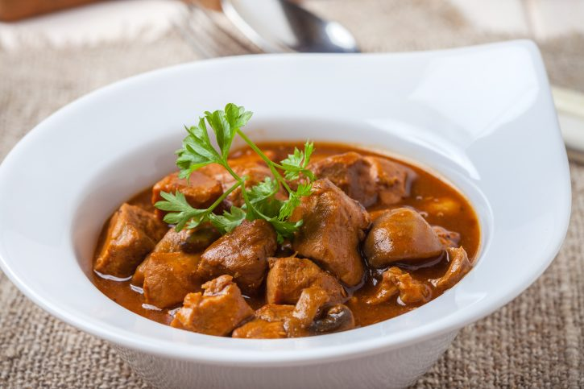

Gulas

Description
Gulas is a stewy dish made mostly from mixed meats and a lot of paprika
A very strong on stomach dish, served often as last meals for soldier who are about to be deployed
Ingredients
- Mixed meat
- Garlic
- Peper
- Salt
- 4l of water
Prep
- Put everything to boil for a long time
- Mix it a few times so meat doesnt stick to the bottom of the dish
- Enjoy your Gulas
Back